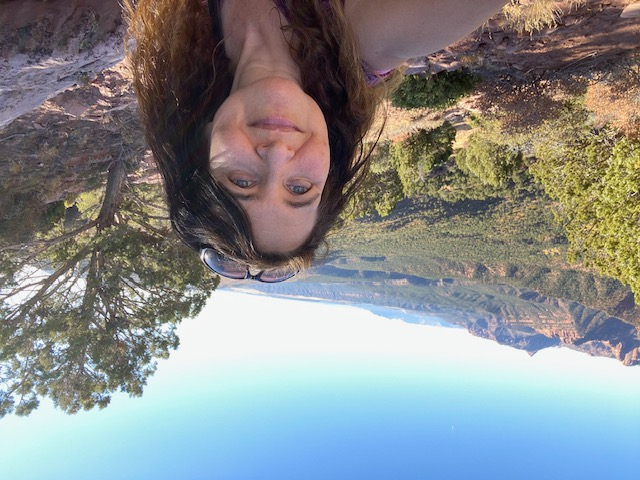

Take the Long Way Home
(Written while listening to Supertramp)
I looked over at my Romeo. How about we make a picture show? Let’s take the long way home. A corona-free drive home.
We’ll have some times when we feel we’re part of the scenery.

All the greenery! Hike up and down, boy?
{kind=link}
When you see the arches, it’s so unbelievable.

Unforgettable. How we adored you…tah.
{kind=link}
Past two days and two airbnb nights,
{kind=link}
We took a trip to see the farm house lights. And porches newly stained; wood now darkly grained.

Then to the barn, to give scraps to Dad’s favorite hens,

and grass to our cute cow friends. To tell ’em “We adore you.”

When they think hair is delicious hay,
{kind=link}
That’s quite peculiar, you say. But also cute, so we’ll be nice!

And when the day comes to settle down, careful siblings gather ‘round.

And put streamers all around. (That Sophie so wants to tear down!)

Happy 97th birthday, you say! A very special day. Friends’ cards say, “We adore you!”

Next day, we check out the corn and learn,
{kind=link}
just what the yield has earned. 242 bushels/acre - sure is nice!

Then Keith gives Dad some model toys; tiny equipment for the birthday boy,
{kind=link}
Tractor, trailer, and combine,

And oh, they look so fine!
{kind=link}
Next day we go for another drive,

And learn about Nebraska solar over a distance fire.
{kind=link}
Before we take the long way home.
{kind=link}
The I-70 long way home.
{kind=link}
Back in Utah, we see a peculiar valley,

with a strange and colorful gallery,
{kind=link}
of sandstone goblins, whoa!
We wonder if we could be losing our sanity. Is it volcanity?

No, it’s a geologic monocline!
You never see all you wanna see, or everything ya coulda seen. If we only had more time.

But a dash light’s on, and it’s a warning sign. Is the car still fine? Head for the Arizona line!

We gather rocks along a river road, and in the trunk, they nicely stowed.
{kind=link}
To decorate our own fine home. A lovely long way home!
{kind=link}